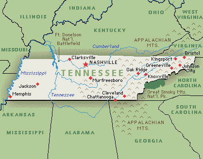
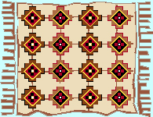

Recent Results and
Events
March 2009
Carolina Players Shine At East Tennessee Scholastic
Dateline: March 28, 2009: Thirty-four players met for some great chess this Saturday at the East Tennessee Scholastic Open. In the Adult Section, tough Peter Suich dominated at 3-0 to claim 1st place. There was a 2nd place pileup with five players going 2-1: Terence Burdett, Victor Suich, Benjamin Blair, Laura Cannon, and Frank Brindisi. In the K-12 Section, North Carolina's Matt Embler made a clean sweep at 5-0 to earn clear first. Jordan Joseph came in a close second with 4-1. In the K-3 and K-6 combined Section, David Simonsen left no doubt about it with a perfect 5-0 to win first place. Two players tied for second place at 4-1: Greg Johnston and Leo Yount.
The top finishing teams were from North Carolina: 1st: Hibriten HS (Lenoir, NC), 2nd: West Caldwell HS (Lenoir, NC), and 3rd: McDowell HS (Marion, NC).
Dr. John Simonsen directed the event. Apologies to him and the participants for a slight delay in posting the results. For a complete cross-table, click HERE.
FM Ron Simpson Dominates Extra Section at Master Trek!!
North Carolina Grand Champion FIDE MASTER Ron Simpson was up to his old tricks as he went a perfect 1-0 to win outright first place honors in the ultra-exclusive Extra Section of the Durham Academy Master Trek XVII recently. Kudos to FM Simpson for his support of North Carolina Chess, and for his great sense of humor in putting up with this April Fools gag.
Durham Academy Masters Keep on Trek'n
Dateline: March 28, 2009: Forty-seven players participated in the Durham Academy Master Trek XVII this past Saturday. In the Closed Section, FM Ron Simpson was in his usual top form, breezing past the competition with 3-0 to earn clear first and $150.00 cool cash. Nipping at his heels was Brad Marts with 2.5 points, which earned him the $100.00 second prize.
In the scholastic A Section, Robert Jackson swept the field with perfect 3-0, and Jeffrey Zhou came in second with 2.5 points. The B Section was dominated by Yu Wang at 3-0, with three players tying for second place honors with two points each: Akash Krishna, John Heaney, and Ryan White. The C Section was captured by Robert Hellinga with 2.5 points to earn clear first place, with three players tying for second place in the section: Christopher Chaves, Elias Tymas, and Andrew Felter. The D Section was no problem for William Richardson, who went a perfect 5-0 to win first place. Coming in a close second in the section was Lauren Hunt with 4.5. Honorable mention must be made to Ryan Hunt, who went 4-1 and gained a whopping 272 USCF rating points. NICE!
Please note that the section names above do not denote rating classes. The event was directed by Ben Jones. For a complete cross-table, click HERE.
Trower and McGavran Share First at a Record-Breaking Reverse Angle!
Dateline: March 28, 2009: Seventy-three competitors gathered Saturday for what has quickly become one of North Carolina's largest one-day events: The Reverse Angle. The Queen City Chess Association's tag team of directors Peter Giannatos and Gary Newsom were on hand for "crowd control" and chess administration. If these numbers keep skyrocketing, they may have to invest in some riot gear!
In the Open Section, Todd Trower and James McGavran both went 3-0 to tie for first place, earning $135.00 each. The Under 1800 Section was locked up by Gilbert Holmes with 3-0, netting him a cool $180.00. Second place ended up with a seven-way split: Derek Smith, Stephen Morales, Leroy Greenlee, Howard Hamilton, Seth Taylor-Brill, Chad Moody, and Joseph Biernacki. Each pocketed $16.00. In the Under 1400 Section, Greg Ellis took no prisoners going 3-0 to earn clear first and $180.00. Scholastic power-player Shouri Gottiparthi captured clear 2nd earning $60.00. In the Under 1100 Section, Lloyd Liu and Ameya Sule both finished with perfect 3.0 scores, earning $120.00 each for their efforts.
The total prize fund was around $1200.00. Peter Giannatos directed. For a complete cross-table, click HERE.
FM Ron Simpson Walks Off With Another TACO!
In the Advanced Section, Kenny Xie and Nicholas Butts tied for first place with 3.5 out of 4, netting $90 each. William Lefew took home the Under 1400 $40 class prize with 3 points, and Sal Nolfo pocketed the $30.00 Under 1100 class prize with 2.5 points.
Seventy-seven Players Blanket Charlotte's Olympic High School!
Dateline: March 21, 2009: Seventy-seven chess players came out to compete in the Fake Copper Blanket XXII at Olympic High School in Charlotte this Saturday.
NM Chris Mabe decided at the last minute that chess was more important than math homework, and added up a 2.5-0.5 score to win the Open Section and $100. Todd Trower and Kevin Huang shared second place honors at 2.0 to win $50 each. In the Under 1800 section, Derek Zhang and Charles Carerros tied for first place and pocketed $75 each. Jonathan Chen arrived surprised to find his 1204 rating had promoted him to the Under 1400 section; he responded by reeling off a perfect 3-0 to take clear first and $50. Jordan Joseph and Joshua Turner were both untouchable at 3-0 in the Under 1200, sharing first place and receiving $37.50 each. The Under 1000 section was locked up by Christopher Hinson, who had the only perfect 4-0 score in a section of forty-two-players. He carried home a handsome first place trophy for his fine performance.
Tim Champion directed this awesome event. The previous report is largely based on his submission to this website. For a complete crosstable, click HERE.
Raleigh Chess Academy's Sunday Scholastic a Success
Dateline March 15, 2009: Twenty-five young players competed in the most recent RCA Sunday Scholastic. In the top section, Jineet Patel captured first place with 3-0. Evan Balser won the second section, also with a perfect 3.0. In another shutout, Shantam Bhatt went 3-0 to win the third section. The fourth section in the event saw Michael Ferguson rise to the top with 2.5 points. The fifth section was locked up by Anish Jagath with 2.5 points. Last but not least, Negan Fu won the sixth section with 3.0 points.
The event was directed by Steven Abrahams and Bill Clausen. For a complete crosstable, click HERE.
North Carolina Champions Lock Horns in Asheboro!
Dateline: March 14, 2009: A rather light turnout of of twenty chess players met in the center of North Carolina for The Asheboro Open 43 this Saturday. No doubt more than a few parents were still trying to recover from last weekend's enormous Scholastics Championship, and several of our best players were on sick leave. Get well, Jonathon! We missed you!
Asheboro is the front line in the battle of NC Champions, and what this tournament lacked in quantity, it more than made up for in quality. FM Ron Simpson rolled in from Raleigh locked and loaded for another 3-0 performance, but last year's State Champion NM Chris Mabe arrived equally ready for action. Armed with the black pieces, Mabe unleashed a sweet knight sac in his final round game with Simpson, and finished the day at 3-0 to win 1st place. This earned the former NC Champion a $150.00 personal stimulus package. Josh Lawson arrived late from Greensboro, but built on his first round bye to finish with 2.5 and $70.00.
The Candidates Section was dominated by John Retarides of Greensboro's Laurin Keller Memorial Chess Club. He cruised to victory at 3-0, winning $125.00 for 1st place. Michael Clay and Jordan Joseph shared second place at 2-0 each, and shared the $50.00 prize.
We want to thank Charlotte players (including Expert Patrick McCartney and Gilbert Holmes) for supporting our tournament. We also want to welcome back Charles Coleman, who has returned to rated chess after a five-year hiatus. Last but not least, let me personally thank Mark D. Stout of Asheboro, who met me early this morning to help set up, and surprised me later by stopping by to help pack it all back up. I also want to recognize Michael Clay, who braved rain and wind while crossing the parking lot to pick up my lunch. BRAVO!
The total prize fund was $450.00. For a complete cross table, click HERE.
Record-shattering turnout at the 2009 NC State Scholastics Championship
David High crowned K-12 Champion after a 5-0 sweep!
Dateline March 8, 2009: An astounding 506 young chess players gathered at the Blake Hotel in Charlotte this year for our annual scholastic championship. NCCA President Victor Beaman took a few minutes to comment before the awards ceremony: "This is the first year we've ever hit over 500 entrants, which is a huge success for us...I can remember the first time it was over 400. In a few years, it took some time, but we've managed to jump to 500." Victor also spoke highly of the volunteers who helped make this event a success. Indeed, we want to recognize the efforts of the NCCA, CMSCA, coaches, chess parents, and cadre of volunteers who made it all possible. Thanks!
The K-12 Open Section was quite competitive this year. Chapel Hill's David High had an outstanding tournament, battling his way past several higher rated players on his way to a 5-0 sweep. Congratulations to our new State Champion!! His moment of jubilation was shared in no small part by father Walter High, and brother Zachary High, who also lit up the scoreboard for the East Chapel Hill (ECH) team. The tiebreak for second place was won by ECH teammate Tanner Hogue, who was undefeated with 4.0 points. Coming in at third place on the tiebreak was yet another ECH player: Jonathan "J.J." Lang, at 4.0 points. Sixth-grader Tianqi Wang shook up the competition with an undefeated 4.0 performance to earn fourth place on tiebreaks. Wang is a newcomer to rated chess who first played less than two months ago at the Reverse Angle 12! Two other noteworthy performances from the K-12 Open: Fifth-grader Will Campbell finished with 3.5 points to finish seventh place on tiebreaks, and coming in at eighth place on tiebreaks was Durham Academy's chess princess Indira Puri, Champion David High also with 3.5 points.
The K-12 Under 1300 Section was chock full of fine undefeated performances, with a four way tie for first place (listed by order of tie-breaks): Drew Holloway, Ben Hinson, Praveen Suthaharan, Aaron Atkinson. Each scored 4.5 points to earn the title of Co-Champion. Well done!
The K-8 Section produced a clear new champion in Joshua Mu, who finished with 4.5 points to earn the title outright. Close on his heels was Robin Yopp, who captured clear second place with his undefeated 4.0 performance. The K-8 Under 1000 title went to Richard Fu, who was undefeated with 6.5 points and the clear first place winner. The next four place finishes were awarded on tiebreaks with four players at 6.0: Jineet Patel (2nd), Aninda Manocha (3rd), Benjamin Cowgill (4th), and Martin Riedel (5th). Great performances all around!
The clear K-5 Section champion was fourth-grader Aaron Balleisen, who racked up six victories and one draw to earn first place honors. Second place on tiebreaks went to Joey Swann with a strong 6.0 performance, followed by Christopher Borges at a close third place with 6.0 as well. The K-3 Section was captured by Benjamin Snider, who racked up 6.5 points while taking a third round bye! His first place finish also earned him 183 well-deserved rating points. Wow! There was a five-way tie for second place, which was decided based on tiebreaks: Emmanuel Carter (2nd), Derek Chen (3rd), Chad Moody (4th), Shivansh Tomar (5th), and Sam Ferguson (6th). In the K-1 Section, Samuel Kio went undefeated at 6.5 to finish in first place. Aaron deJong was within half a point to finish second place with 6.0 points. Congratulations to all of these tough competitors!
The Blitz Tournament was dominated by two players: Joshua Mu and Tanner Hogue. Each finished with nine points to earn the title of Co-Champion. Rounding out the top five finishers were (in order of tie-break): Connor Labean (3rd), Dominique Myers (4th), and J.J. Lang (5th).
Now for a brief look at team standings. East Chapel Hill took the bull by the horns in the K-12 Section, finishing clear first place with 16 points. Durham Academy held its own with 13 points to finish in second place. The K-12 Under 1300 Section was a free-for-all decided on tiebreaks: Durham Academy (1st), Myers Park HS (2nd), and South Charlotte (3rd). Each of these had 14.5 points. The K-8 Section was dominated by Phillips Middle School, with a large and determined team who took clear first place. A distant second with just two team members was Randolph Middle School. The K-8 Under 1000 was a fierce battle, with Phillips Middle capturing clear first just ahead of second place Durham Academy. The K-5 Section was also hotly contested, with Arden, NC's (near Asheville) Avery's Creek taking clear first ahead of rival team Barringer of Charlotte, who finished second place. The K-3 Section was up for grabs, with many talented teams in competition. Veritas took clear first place, with Durham Academy close behind for a tiebreak second. Charlotte's Barringer also came in with 18.5 points, to finish third on tiebreaks. Last, but not least, the K-1 Section saw Durham Academy rise to the occasion and take clear first with 14.5 points. Metrolina Regional Scholars' Academy took clear second place honors.
Unfortunately, time won't permit me to mention everyone who made this event special: people like Randy Wheeless, who did extraordinary organizational work. I also regret being unable to mention every special player (I counted 506 of them) who played with heart and determination. This event has gotten so good, it is impossible to cover adequately, but I have done my best.
Can't get enough coverage? Need more facts? Stay tuned for our special coverage in the upcoming NC Gambit, featuring interviews, photos, stories, and silliness you won't find anywhere else! Still need more? How about GAMES, brought to you by last year's scholastic champion Jonathon McNeill? In the meantime, here is a mountain of information for the curious: 2009 NC Scholastic Individual Standings, 2009 NC Scholastics Team Standings, 2009 NC Scholastic Blitz Standings, and Official USCF Ratings for the Event. Missing something? Maybe we found it: Lost and Found at The NC State Scholastic. See also the following links with photos: My Chess Photos & Radio Station Link with Photos.
Tom Hales, Editor.
Click here for January-February 2009 Results
Send comments, questions, or problems relating to the website to the webmaster.
Copyright © 2001-09, North Carolina Chess
Association